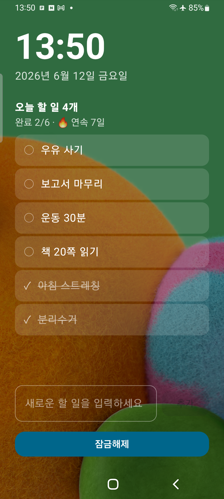

0에서 1로 가는 가장 빠른 궤적
Speed아이콘 왼쪽의 가느다란 선은 지상에서 가장 빠른 동물, 치타의 질주를 상징합니다. 할 일이 떠오른 순간부터 기록하고 완료하기까지 — 그 어떤 방해나 지체 없이 처리되는 빠른할일의 압도적인 속도를 한 획에 담았습니다.
잠금화면 알림에서 바로 추가하고, 바로 완료하는 가장 빠른 투두 앱.
앱을 열 필요조차 없습니다.
"생각은 가볍게, 실행은 빠르게, 마무리는 확실하게."
빠른할일의 아이콘은 단순한 로고가 아니라, 우리가 지향하는 '생산성의 본질'을 담고 있습니다. 하나의 선이 시작되어 체크마크로 완성되기까지 — 그 짧은 궤적이 곧 이 앱의 철학입니다.
아이콘 왼쪽의 가느다란 선은 지상에서 가장 빠른 동물, 치타의 질주를 상징합니다. 할 일이 떠오른 순간부터 기록하고 완료하기까지 — 그 어떤 방해나 지체 없이 처리되는 빠른할일의 압도적인 속도를 한 획에 담았습니다.
할 일이 산더미처럼 쌓였을 때의 무거운 마음을 잘 압니다. 그래서 이 아이콘은 여러 선이 아닌 단 하나의 유려한 곡선으로 그렸습니다. 복잡한 생각을 멈추고, 지금 해야 할 일 하나에만 집중하게 하는 단순함의 미학입니다.
날렵하게 시작된 선은 오른쪽 끝에서 굵고 단단한 체크마크로 완성됩니다. 일을 완벽하게 마무리했을 때의 성취감과 신뢰의 표현입니다. 다홍과 노랑이 어우러진 따뜻한 그라데이션이 체크할 때마다 하루에 활력을 더합니다.
"생각은 가볍게, 실행은 빠르게, 마무리는 확실하게."
빠른할일은 당신의 소중한 시간이 '할 일을 고민하는 데' 쓰이지 않도록, 세상에서 가장 직관적인 경험을 약속합니다.
잠금화면 알림과 앱 화면이 하나의 목록을 공유합니다. 어디서든 가장 빠른 길로 할 일을 처리하세요.
휴대폰을 잠금 해제할 필요도 없습니다. 잠금화면 알림에서 바로 할 일을 입력하고 추가하세요.
알림창에서 체크 한 번이면 완료. 앱 화면과 알림이 항상 같은 목록을 실시간으로 공유합니다.
진행 중 · 완료 · 전체를 한눈에. 완료한 일은 한 번에 정리하고, 오늘 해야 할 일에만 집중하세요.
화면을 켜는 순간, 잠금을 풀기도 전에 오늘 할 일이 먼저 보입니다. 탭 한 번으로 완료하고, 그 자리에서 새 할 일도 추가하세요.

알림창과 앱 화면이 항상 같은 목록을 공유합니다. 실제 화면으로 확인해 보세요.


생각이 떠오른 순간부터 완료의 체크까지 — 단 한 줄의 궤적으로.